Ключевые образы

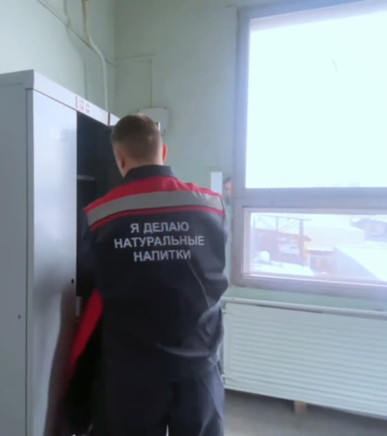
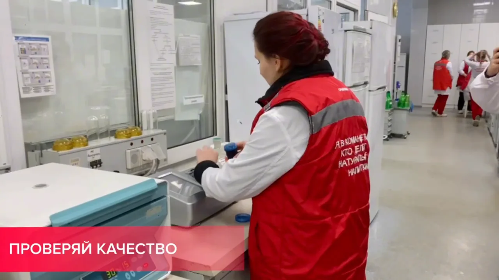
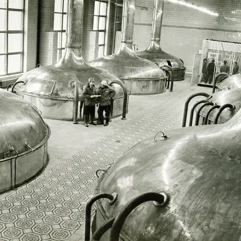
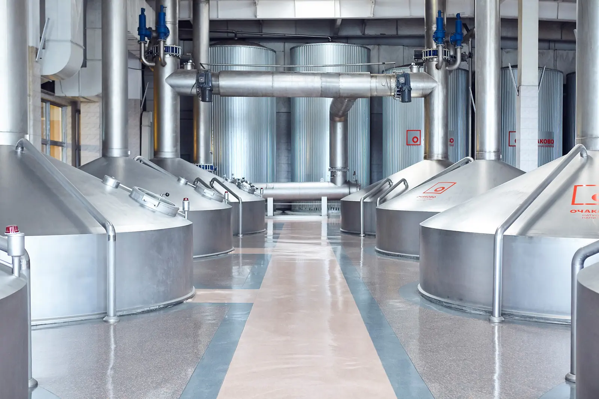
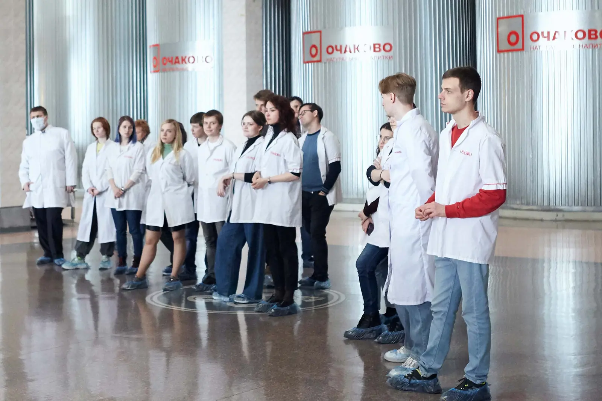
HR-бренд «Очаково» для студентов и выпускников
Как привести студентов на практику в «Очаково» и удержать их до конца сезона
группировка antihype
Задача от «Очаково»
«Очаково» знают по квасу, а как работодателя почти не знают. Экскурсии, музей, инженерные классы, вузы и ярмарки работают каждый сам по себе. В сезон штат линии розлива, лаборатории, технологического цеха и склада нужно увеличить в разы, а 38% новичков уходят на испытательном сроке.
Что мы сделали
Идея
Идея опирается на две ценности из брендбука. Натуральность становится настоящей работой: договор по ТК РФ, зарплата 12-го и 27-го, оборудование, которое делает квас. «Патриоты своего дела» становятся мастерами, которые учат следующих.
Цель
На оплачиваемую практику подают больше заявок, чем есть мест, и практиканты доходят до конца.
База из кейса: конверсия в найм 0,02%, 38% уходят на испытательном сроке, средний возраст сотрудников 52 года. HR-панель считает то же для своих кандидатов: конверсию в найм, уход до конца сезона и возраст принятых.
Слоган
Квас делают люди
Фраза начинается с кваса, который все видели на полке, и переводит взгляд на людей за ним. Её можно сказать вслух и поставить на листовку. Так же называется легенда на сайте.
Запасные для фокус-группы: «Я делаю натуральные напитки», надпись со спины рабочих курток, и «Сначала научим, потом доверим». Отобрали три из 24 вариантов.
Экскурсии, музей, инженерные классы, вузы и ярмарки у «Очаково» уже есть. Сейчас каждая точка работает сама по себе, и никто не считает, какая из них приводит людей на смену.
Мы даём всем точкам одну фразу «Квас делают люди», одну сумму от 56 000 ₽ до вычета налога и один путь: сайт или бот, заявка, HR-панель. У каждой точки своя метка, и «Воронка» показывает, сколько людей она привела на смену.
стажировок студенты находят через вуз или колледж, 29% через родственников и знакомых и только 5% через ярмарку. Поэтому ярмарка остаётся одной из точек, а главными становятся вузы и друзья.hh.ru
Сайт открывается по QR без установки, у бота тот же сценарий. Красным отмечено, где теряем кандидатов, ниже то, что с этим делает продукт.
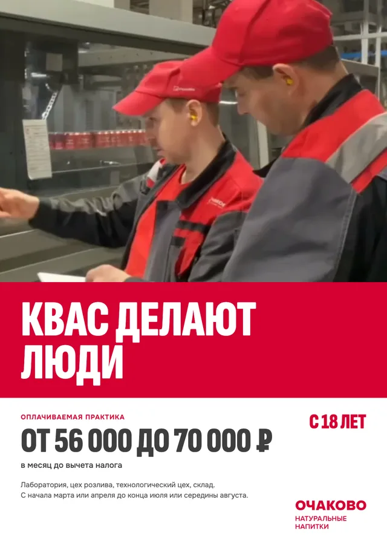
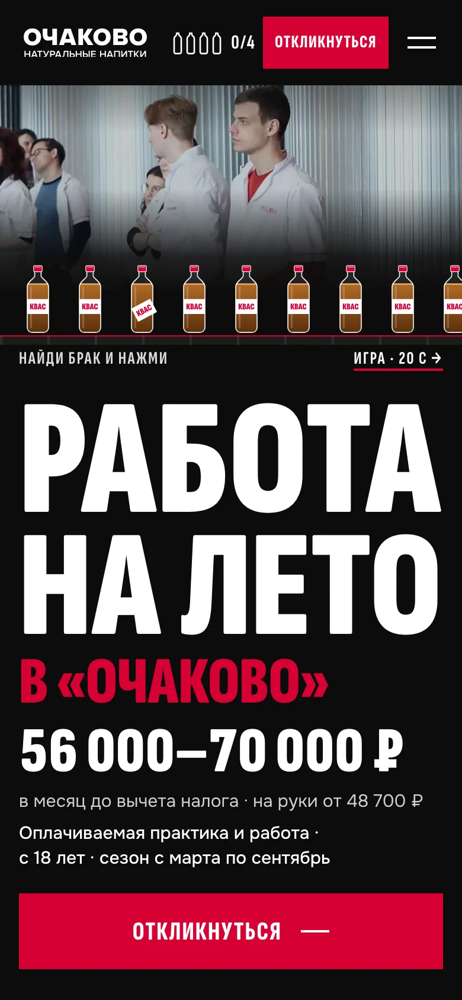
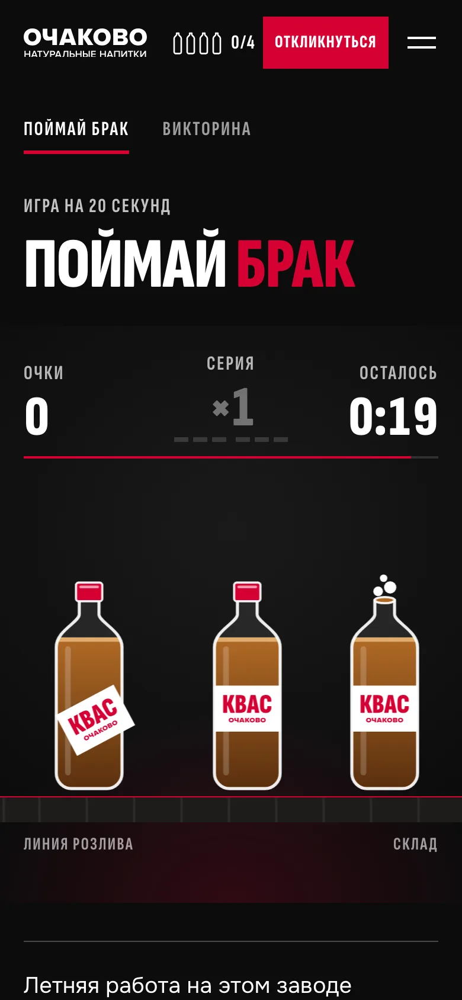
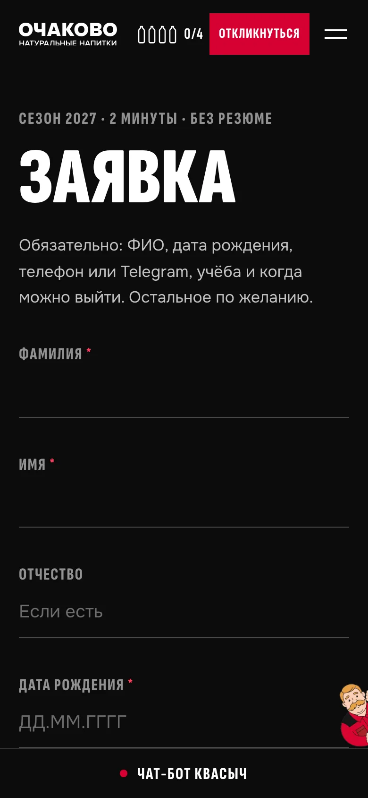
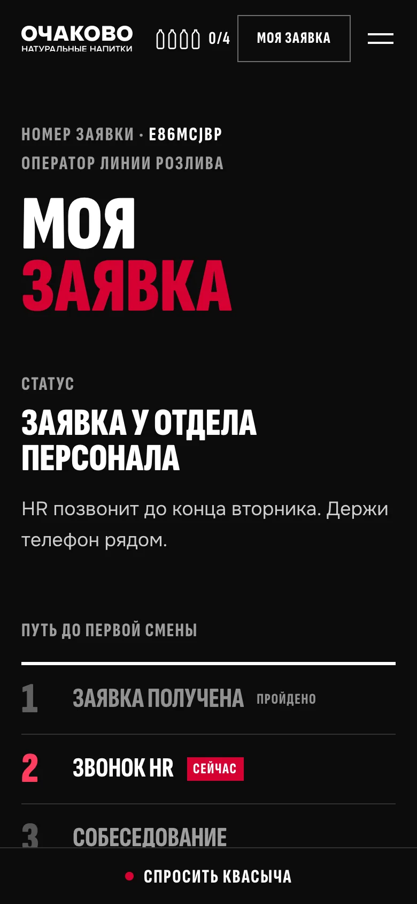
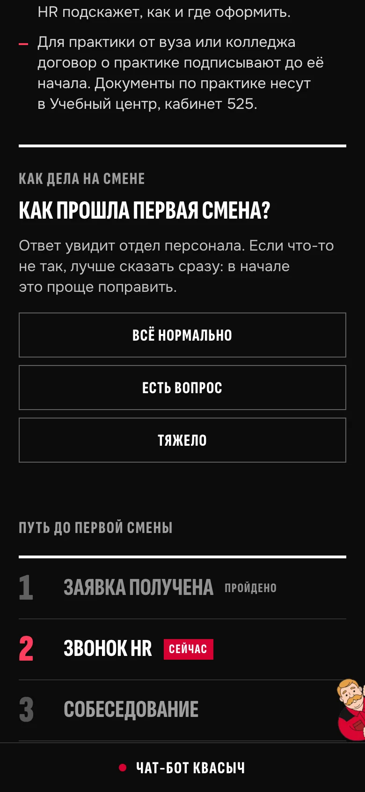
ЛистовкаЗнают по квасу, а как работодателя нетQR ведёт на сайт с меткой точки
СайтБез суммы закрывают страницуСумма на первом экране
ИграБоятся графика и что не справятсяРабота показана честно, задания заполняют заявку
ЗаявкаДлинная форма отпугиваетОколо двух минут, без резюме
Ожидание40% теряют интерес за 3 дня (hh.ru)Статус и срок звонка на виду
Смена38% уходят на испытательном сроке (кейс)Вопрос «как дела» после первой смены, недели и месяца
Что в это время видит HR
Метку источника: ярмарка, вуз, экскурсия, друг
Сколько людей пришло по каждой метке
Какие задания прошли
Новую заявку и задачу позвонить
Заявки без ответа дольше суток
Кому тяжело на смене
Первый экран
Сразу видна сумма от 56 000 до 70 000 ₽ и сколько это на руки. По ленте едут бутылки кваса, на бракованную можно нажать и начать игру.
«Собери лето»
Кандидат выбирает должность и свободные месяцы и видит деньги за лето. Месяцы переходят в заявку.
«Подбор работы»
Четыре вопроса о том, что ближе, и сайт предлагает подходящую вакансию. Она сама встаёт в заявку.
молодых до 24 лет не смотрят вакансии без суммы.SuperJob
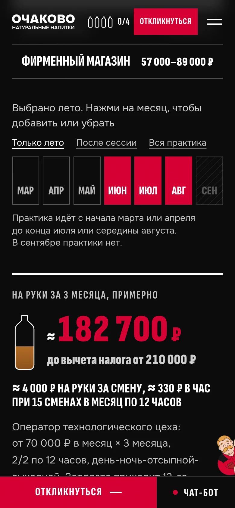
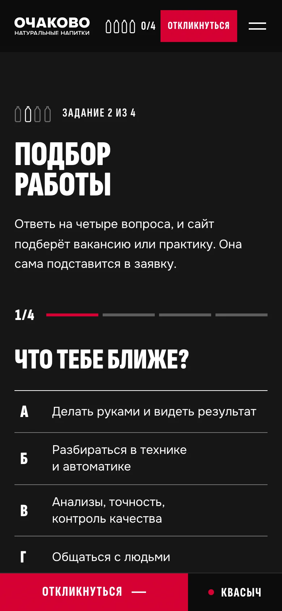
«Поймай брак»
20 секунд на линии розлива: найти бутылки без крышки, с недоливом или кривой этикеткой. Это часть работы оператора с зарплатой от 70 000 ₽.
«Правда или миф»
Пять карточек вроде «без резюме не возьмут». Страхи разбираются до собеседования.
«Путь кваса»
Восемь этапов от зерна до полки и кто работает на каждом.
Викторина
7 вопросов об «Очаково». За 6 верных значок «1978»: его забирают на стенде или экскурсии, а если заявка подана, HR видит результат и выдаёт значок в первый день.
ушедших в первые полгода говорят, что работа не совпала с описанием.hh.ru и Dream Job
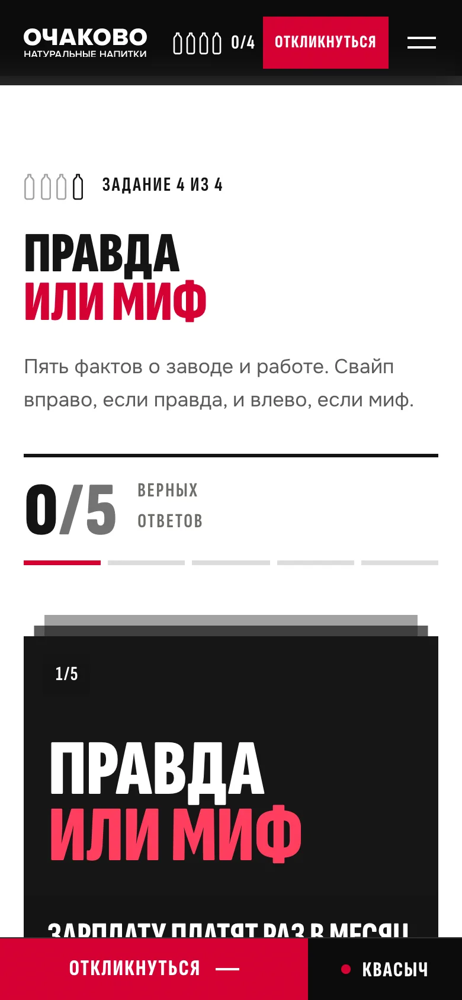
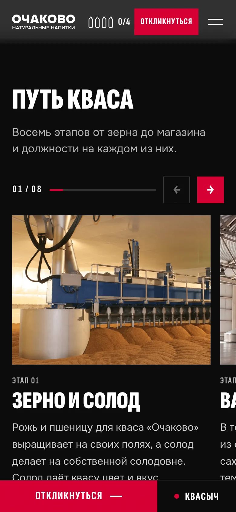
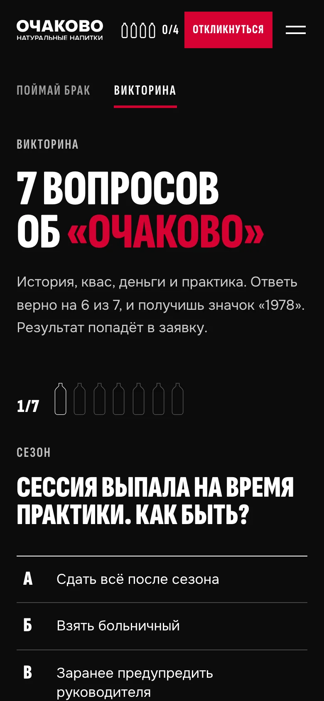
Как работает
Квасыч, мастер-наставник с усами в красной куртке, отвечает на вопросы: сколько платят, где жить, как добраться, какие документы нести. С GigaChat говорит своими словами, без ключа отвечает готовыми ответами из базы. Суммы и сроки берёт из вакансий, которые ведёт HR. Если точного ответа нет, так и говорит, даёт телефон отдела подбора, а вопрос попадает HR.
Что даёт
Ответ ночью и без звонка. Бот для Telegram и MAX работает на том же движке: присылает приглашение на собеседование и напоминает о нём накануне. В Telegram игры сайта открываются мини-приложением прямо в чате.
людей 18–24 лет читают о работодателях в Telegram.«Сетка» и hh.ru
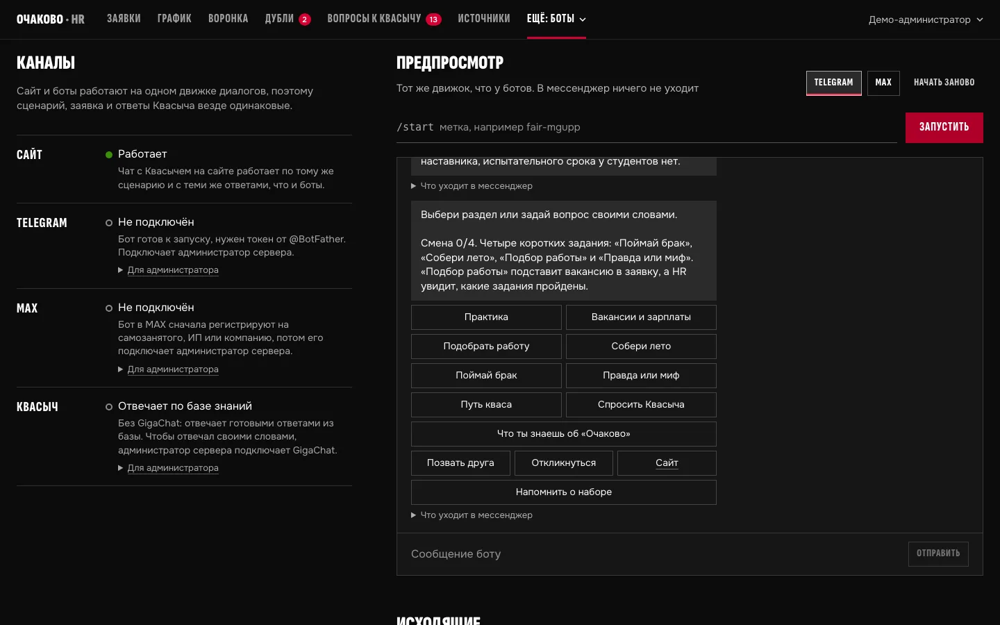
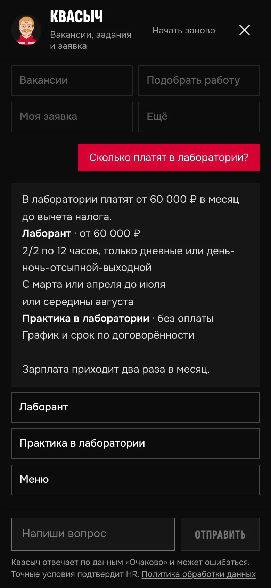
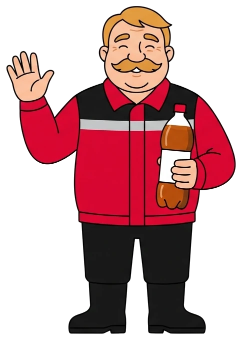
Как работает
После первой смены, через неделю и через месяц новичку приходит один вопрос. Ответы: всё нормально, есть вопрос, тяжело. На «тяжело» человек выбирает причину, видит, что можно сделать сразу, и узнаёт, что ему позвонят.
Что даёт
HR узнаёт, кому тяжело, пока человек ещё не ушёл: в карточке появляется задача позвонить и причина. Частые причины становятся темами роликов.
ушедших в первые полгода решили уйти в первый месяц.hh.ru и Dream Job
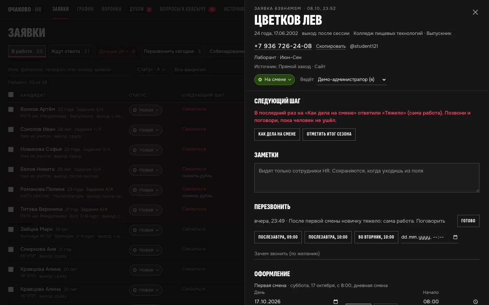
Все заявки в одном месте
С сайта, из бота, с hh.ru и добавленные вручную. Сверху подборки: ждут ответа, дольше 24 часов, перезвонить сегодня, тяжело на смене. Статус меняется прямо в строке.
Воронка до выхода на смену
У каждой точки своя метка. По каждой видно, сколько людей пришли, подали заявку и вышли на смену, и сколько стоил один выход. Бюджет переносим туда, где выход дешевле.
заявок получила британская армия, назвав молодых «снежинками», а поступивших стало меньше. Поэтому меряем выход на смену.Marketing Week
Попробовать самим: antihype.best/hr, почта jury@antihype.best, пароль jury-antihype
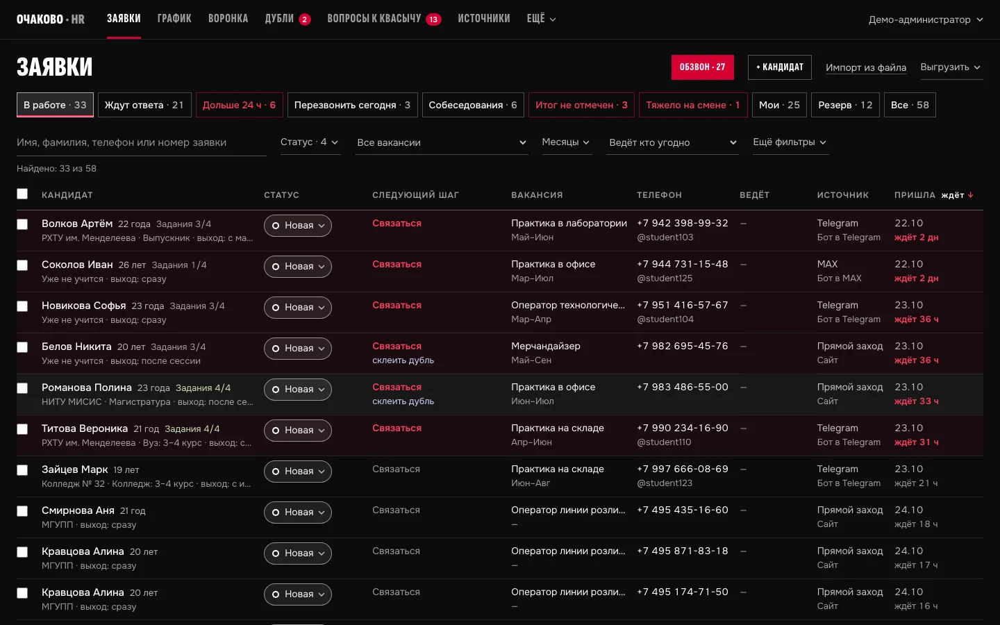
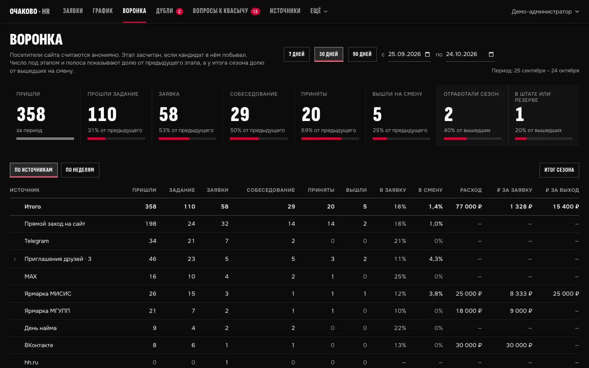
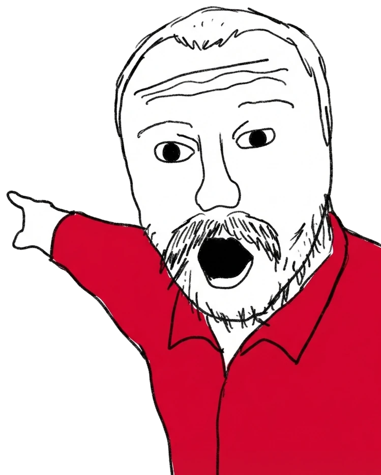
На лицевой стороне листовки A5 слоган, сумма и QR с меткой точки, на обороте роли с суммами и три шага до собеседования. Ролл-ап 850 × 2000 мм видно издалека. Табличка на стол зовёт ответить на 7 вопросов о заводе, за ответы без ошибок дают носки.
Для вузов есть вкладыш про практику по договору, для новичков памятка A6 перед первой сменой.
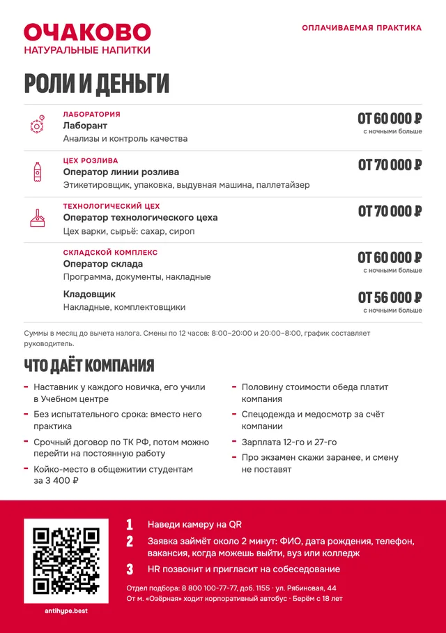
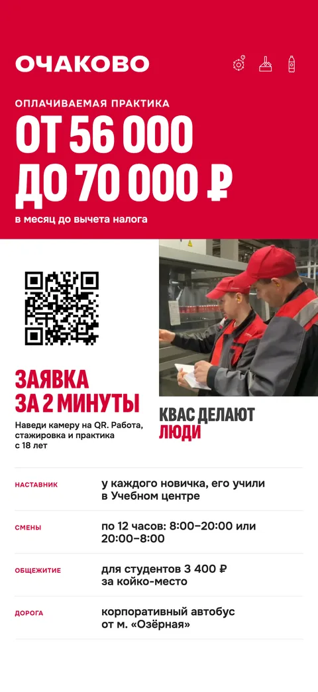
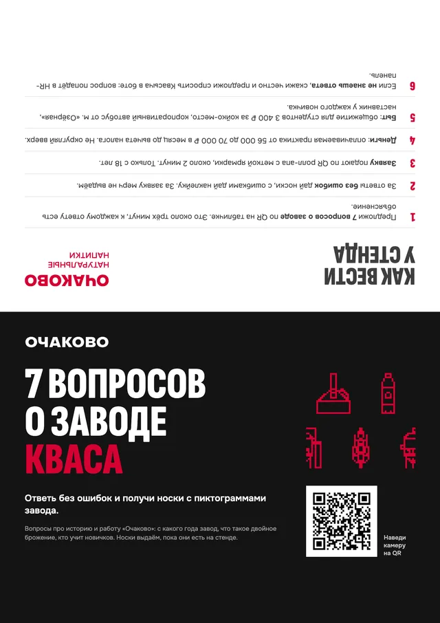
Маскот и стикерпак
Квасыч, мастер-наставник с пышными усами в красной рабочей куртке. Подсказывает на сайте и в боте, на листовках маленький и рядом с настоящими людьми. Из 15 поз собран стикерпак для Telegram с подписями, которые годятся для любого чата.
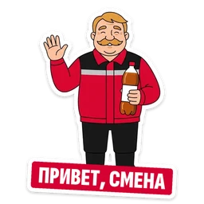
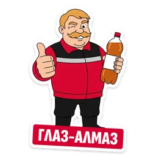
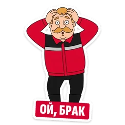
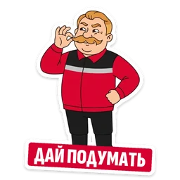
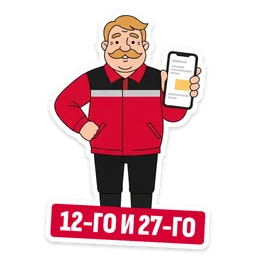
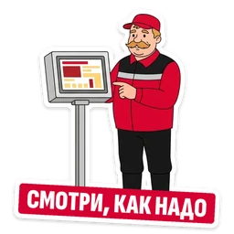
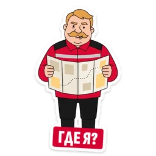
Где кандидат
Один сервер
Где HR
Суммы, вакансии и справочник студента лежат в одном месте. HR меняет сумму в панели, и сайт, бот и Квасыч сразу говорят новое.
Без GigaChat Квасыч отвечает из базы, без бота работает чат на сайте, без Диска выгрузка по кнопке.
Сервер, база, GigaChat и Яндекс Диск в России. Личные данные в модель не уходят, есть срок хранения и удаление по запросу.
Docker, база и HTTPS ставятся одной командой, так поднят antihype.best. Обновление той же командой.
Свои шрифты, сжатые фото, без внешних скриптов и CDN: страница быстро открывается по QR на ярмарке.
React и TypeScript, сервер на Node.js, PostgreSQL, Docker и Caddy. Код открыт: github.com/3r0ha/Ochakovo
0,78–2,22 млн ₽
пилот на сезон: ролики, реклама VK, посты в каналах, ярмарки, вакансии, сервер и GigaChat. Мерч отдельно, от 445 тыс. ₽
1 950–5 550 ₽
один выход на смену, если выйдут 400 человек. Если выйдут 200, то 3 900–11 100 ₽
Что нужно от «Очаково»
Пилот окупается, если выход на смену дешевле, чем сейчас стоит компании найм практиканта. Число 400 и конверсии мы оценили сами, их заменят план найма отдела персонала и первые две недели «Воронки». Каждый платный канал тестируем две недели и оставляем те, где выход дешевле.
Следующий сезон дешевле первого: разработка уже сделана, остаются сервер, GigaChat и реклама. Всё, что меняется от сезона к сезону, HR правит сам.
HR-панель: antihype.best/hr
почта jury@antihype.best
пароль jury-antihype
Квас делают люди
Спасибо
группировка antihype
Исследования, обоснования и подробности решения. Номера кликабельны.
Исследования и обоснование
18Что мы заметили: цифры исследований19Молодые работают не хуже20Правила завода и зачем работать21Второстепенные проблемы22Аналоги и что придумали самиКонцепция подробно
23Ключевые образы24Что говорим каждой группе25Легенда «Квас делают люди»26Как проверим концепциюПо каждому критерию кейса есть слайды с подробностями, а в продукте место, где ответ можно проверить руками.
Квас «Очаковский» знают все, а людей, которые его делают, не видно.
У компании уже есть то, что нужно молодым: практика от 56 000 ₽, наставник у каждого новичка, общежитие студентам за 3 400 ₽. Пишут об этом в основном во внутренних документах.
Молодые сначала ищут сумму, потом смотрят, надёжно ли место и быстро ли ответят. Уйти чаще всего решают в первый месяц, если работа оказалась не такой, как ждали.
За тех же людей конкурируют доставка и склады маркетплейсов: курьерам в Москве предлагают около 150 тыс. ₽ на руки. Деньгами их не перебить, у завода другие доводы: договор по ТК РФ, наставник, практика по договору с вузом и путь в штат.
Changellenge, 8 000+ студентов 40 вузов; «Сетка» и hh.ru; hh.ru и Level Group, 2 139 соискателей; SuperJob; hh.ru; hh.ru и Dream Job.
места работы сменили американские бумеры в 18–24 года. Первую работу часто меняют в любом поколении.
Уходили с испытательного срока
Так ведёт себя первая работа. Концепция может снизить отток, до нуля он не упадёт.
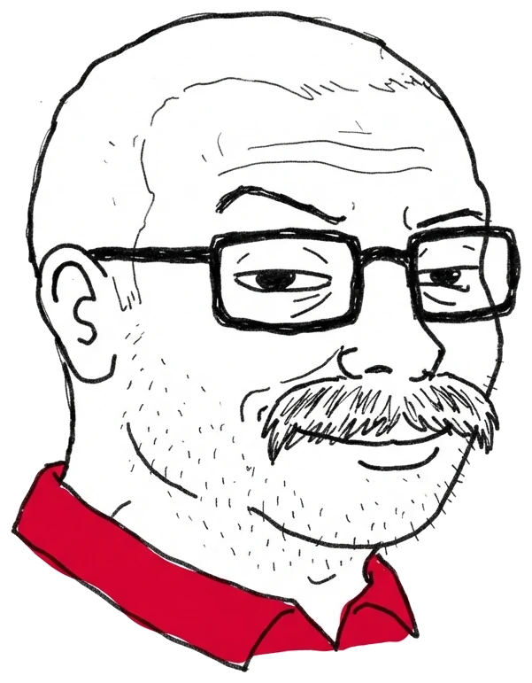
Что показывают исследования
Ненадёжные люди есть в любом поколении.
По году рождения их не вычислить.
Бюро трудовой статистики США; Авито Работа; Costanza и соавторы; Rudolph и соавторы; ЛАНИТ, экономфак МГУ и ИНП; Kept.
Новичку объясняем, зачем каждое правило и кого оно защищает. До заявки говорим на «ты», как ролики компании, на смене на «вы».
Смысл передаёт живой человек рядом, поэтому о нём говорит наставник.
больше денег собирали операторы колл-центра после пяти минут разговора со студентом, которому помогали. Письмо от того же студента не сработало.эксперимент Гранта и соавторов
Данные о заводе: каталог «Очаково» и ochakovo.ru.
Из кейса
Заметили сами
Аналоги
Берём: настоящих рабочих вместо моделей, шаги «как попасть на практику»
Не берём: фразу «оплата зависит от направления», у «Очаково» суммы известны
Берём: QR там, где бывают студенты, кадровый резерв
Не берём: сленговые названия профессий и картинки нейросети вместо настоящих людей
Берём: сотрудников-авторов, людей в кадре, вопросы подписчиков как темы роликов
Не берём: абсурдный монтаж и обещания больше, чем есть
Берём: игру с понятным следующим шагом
Не берём: игры без связи с заявкой
Своё
Задания заполняют заявку«Собери лето» ставит месяцы, «Подбор работы» вакансию
Метка на каждую точкуу QR, поста вуза, экскурсии и друга своя строка в воронке и цена выхода
«Как дела на смене»«тяжело» сразу становится задачей позвонить
День найма по ссылкеэкскурсия и собеседования в один день
Квасыч учится у HRответ сотрудника сразу пополняет базу
Мерч за шаг на заводелонгслив через месяц на смене, худи после практики
Один движок на сайт и ботначать на сайте, закончить в боте
Правило с объяснениемк каждому заводскому правилу добавлено «зачем»




Инженеры
Думают, что на заводе напитков инженеру делать нечего
«Линия розлива изнутри, рядом с наставником»
Бесплатная практика в паре с инженером техподдержки и оцифровка линии. Оплачиваемая: оператор розлива от 70 000 ₽
Лаборанты и технологи
Не знают, что на заводе кваса есть лаборатория и цех варки
«Оплачиваемая практика по специальности в лаборатории и цехе варки»
Лаборант получает от 60 000 ₽
Колледжи, линия и склад
Пугают смены по 12 часов, ночные и дорога
«От 56 000 до 70 000 ₽, общежитие студентам за 3 400 ₽ и наставник у каждого»
От м. «Озёрная» ходит корпоративный автобус
4-е курсы и выпускники
Не понимают, кто оформит договор и дневник практики
«Практика по договору с вузом, с зарплатой и без испытательного срока»
После практики можно остаться на постоянной работе
Кто придёт позже
Школьники инженерных классов, друзья практикантов, иногородние студенты, выпускники колледжей, которые сейчас в доставке или на складах, преподаватели и центры карьеры вузов.
Суммы до вычета налога, из «Описания практики» и справочника студента.
Как работает
Рецепт кваса «Очаковский» собирали сами сотрудники завода, они ездили по деревням. Сейчас умение передают наставники, обученные в Учебном центре. На главной это отдельный раздел с таймлайном 1978, 1996, 1998 и сегодня, сразу за ним блок о наставниках, рядом бренды: квас «Очаковский» и «Семейный секрет», «Очаковский лимонад», CoolCola.
Что даёт
История подтверждает, что место надёжное, а наставники отвечают на страх «не справлюсь». Ту же историю рассказывают Квасыч, викторина, экскурсия и музей.
студентов выбирают работодателя по стабильности, это второй критерий после зарплаты.Changellenge
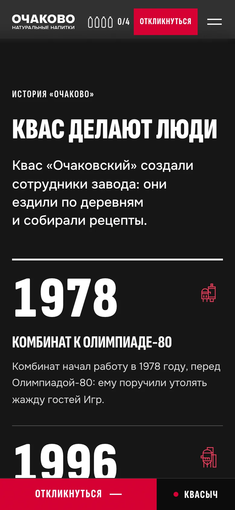
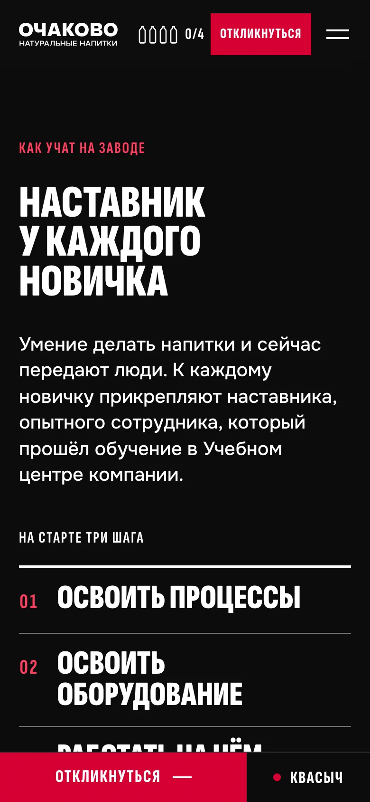
Три встречи по 75 минут, по 6–8 человек, у каждой своя группа: студенты колледжей, 4-е курсы и выпускники, ребята со складов и из доставки. Ещё 4–6 интервью и анонимная анкета на сайте, её ответы HR видит по группам. Ведёт модератор не из команды и не из «Очаково».
Входправила и согласие
Разминкакак искали работу
Слоганымолча пишут, что обещают
Листовка30 секунд, вспомнить сумму
Анкетана телефоне по QR
Слоганы вместекому сказано, что лишнее
Образыкаким кадрам верят
Ролик о профессиичего ждут от смены
Посылыпро меня или нет
Мерччто наденут
Финалпересказ в двух фразах
Пороги записаны до первой встречи. Кроме ответов считаем поведение: сканы QR с листовки, наклейки, которые берут со стола, и заявки по метке за две недели.
Совет для «Очаково»
Фразы «так не бывает» и «так мы не можем» стоит считать гипотезой и проверять на студентах, практикантах и новичках первого года.
Если группа и мнение внутри компании расходятся, по умолчанию прав результат проверки. Безопасность и правила завода на голосование не выносим.
Дальше группа из 10–15 человек 18–26 лет смотрит ролики, реплики Квасыча и вакансии до запуска.
Заявка
ФИО, телефон или Telegram, дата рождения, вакансия, когда можно выйти, вуз или колледж. Около двух минут, резюме не нужно.
«Моя заявка»
Номер, статус и когда позвонит HR. Путь до первой смены по шагам.
Заполняется заданиямивакансия и месяцы уже стоят
Самозаписькандидат сам выбирает час собеседования
Прямо в ботезаявка из бота попадает в тот же список
Ответ в мессенджерзаявку с сайта можно привязать к боту
Позвать другапо личной ссылке, заявки связаны
Напоминаниянакануне собеседования и первой смены
Без дублейповтор за 10 минут не принимается, остальные дубли панель склеивает
Спросить Квасычакнопка внизу заявки и статуса
соискателей теряют интерес, если ответа нет 3 дня. Поэтому срок звонка виден сразу.hh.ru
То, что не видно с первого взгляда. Из-за этого кандидат доходит до заявки, а HR знает, откуда он пришёл.
01
QR ярмарки, пост вуза, ссылка друга: заявка приходит с меткой, «Воронка» считает выход на смену
02
бот в Telegram открывает те же игры прямо в чате, на весь экран
03
статус, срок звонка, самозапись на собеседование и отзыв согласия
04
личная ссылка, заявки друзей связаны, когда друг выйдет на смену, обоим шоппер
05
подписка в боте, сообщение придёт, когда набор откроется
06
до нажатия грузится только постер, звук сам не включается
07
фото в AVIF и WebP, свои шрифты, без внешних скриптов: открывается по QR с мобильным интернетом
08
всё работает с клавиатуры, контрастный текст, «уменьшить движение» выключает анимации
09
счётчиков нет, пока их не включит компания, данные анкеты хранятся в России
10
дату рождения проверяют сайт, бот и сервер одной функцией
Разделы, заявка, задания и Квасыч написаны один раз в общем движке диалогов. Канал только переводит сообщения и кнопки в свой формат. Новый мессенджер подключается своим переводчиком, сценарии не трогаем, так подключён MAX.
Панель ведёт сезон набора от первого отклика до итога и резерва на следующий год.
01
вопрос без ответа уходит в панель, ответ HR Квасыч дальше даёт всем
02
ссылка, QR, плакат A3 и листовка A5 для ярмарки, вуза, экскурсии
03
экскурсия и собеседования в один день, кандидат сам выбирает час
04
отклики из файла попадают в общий список со своей меткой
05
Excel, CSV и CSV для загрузки в 1С, копия на Яндекс Диск
06
шаблоны для бота и SMS, рассылка «Открыт набор» подписчикам
07
сумму и срок HR меняет сам, сайт и Квасыч сразу говорят новое
08
сколько людей нужно по месяцам, список фамилий для охраны
09
HR и администратор, новые заявки раздаются по кругу
10
кто доработал, кто ушёл и почему, кого звать в штат
11
статус и следующий кандидат без мыши, «перезвонить» на нужный час
12
панель находит повторные заявки и склеивает их
13
изменение можно вернуть, сообщение кандидату ждёт 20 секунд
14
лента как в Telegram или MAX, в мессенджер ничего не уходит
15
срок хранения, удаление по запросу, журнал выгрузок
Логотип маленький, а надписи понятны тем, кто работал на заводе. Худи не раздаём на ярмарках, иначе надпись на спине перестанет быть правдой.
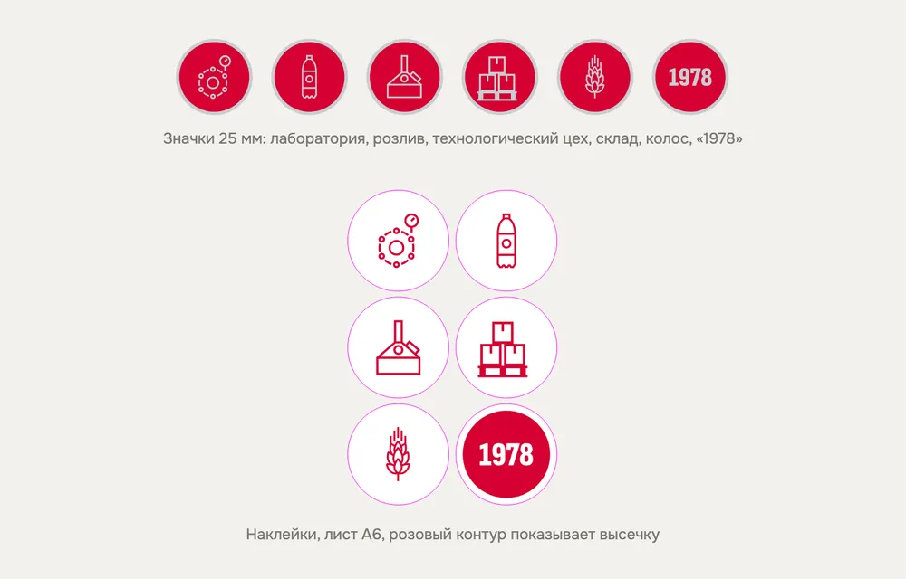
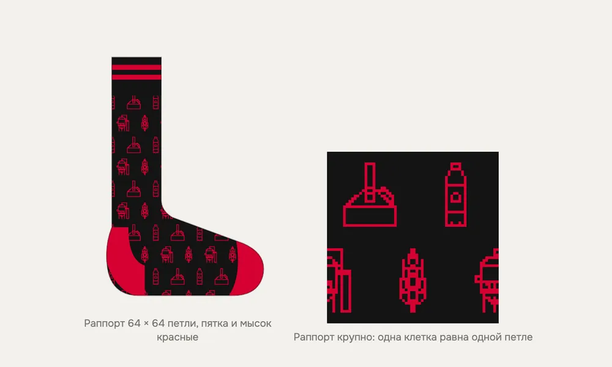
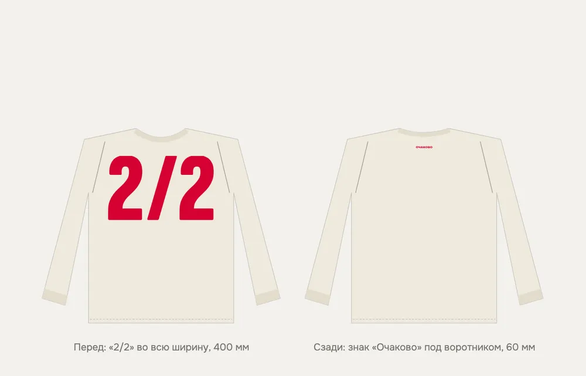
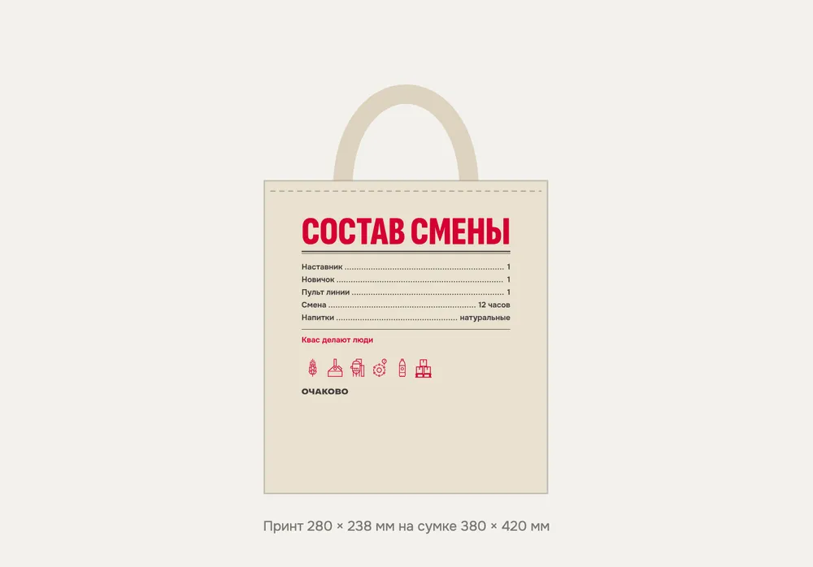
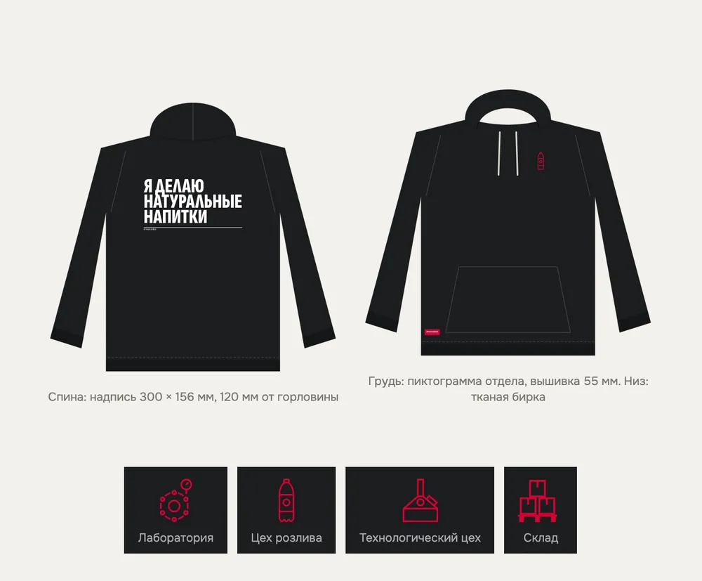
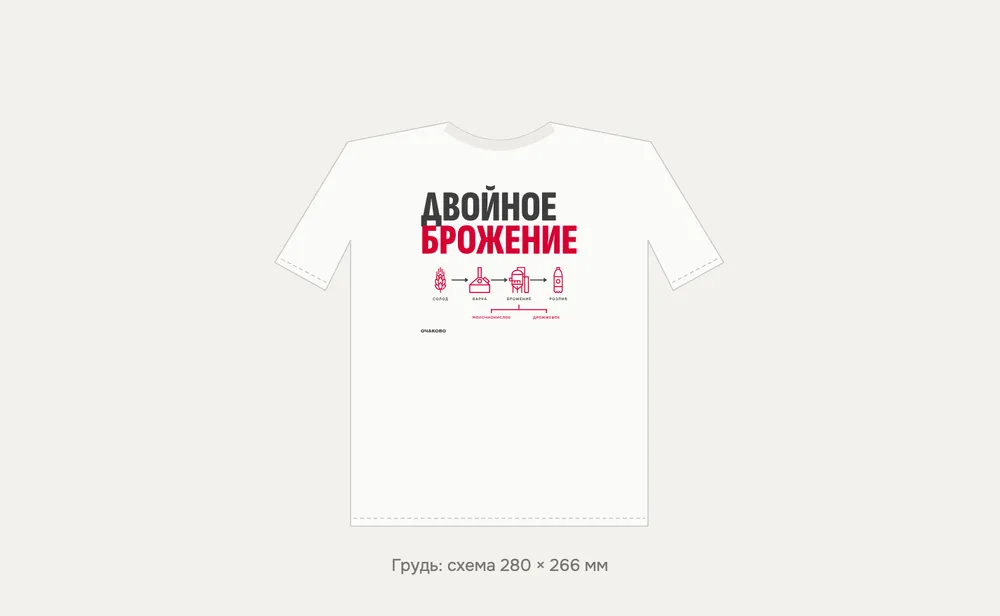
По нашей оценке, набор на 300 вышедших на смену стоит 854–1 413 тыс. ₽, минимальный для пилота 445–770 тыс. ₽. До заказа проверим на фокус-группе, что наденут.
Серия вертикальных роликов по 15–35 секунд. Каждый отвечает на один вопрос кандидата: сколько платят, что выдают в первый день, кто будет учить, что делать в сессию. Выпуск 12 «Квас делают люди» рассказывает о компании: настоящий наставник у пульта говорит новичку одну фразу и отходит на шаг.
Квасыч отвечаетвопросы, которые студенты задали боту
Первый деньпропуск, форма, наставник, линия
Сколько за летопрактикант называет свою зарплату
Тогда и сейчасархивный цех и тот же цех сегодня
12 выпусков на первый месяц: половину монтируем из роликов «Очаково», архивных фото и фирменной графики, остальные снимаем за один день на заводе. Основная площадка VK Клипы, те же ролики идут в Telegram, MAX, YouTube Shorts и Дзен. У каждого ролика своя метка, и «Воронка» покажет, какой привёл людей на смену.
Референсы: ролики «Очаково» о профессиях, BBC Inside the Factory, «Северсталь», «Мармеладыч».
выросла готовность откликнуться, когда «Северсталь» сняла настоящих рабочих вместо моделей. Поэтому в кадре сотрудники и практиканты «Очаково».кейс «Северстали» и Braining Group
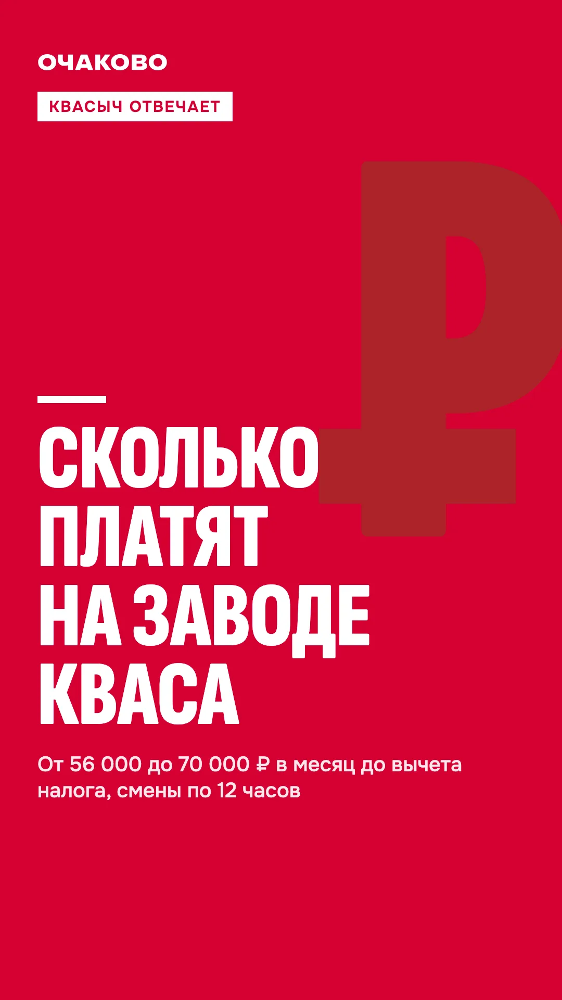
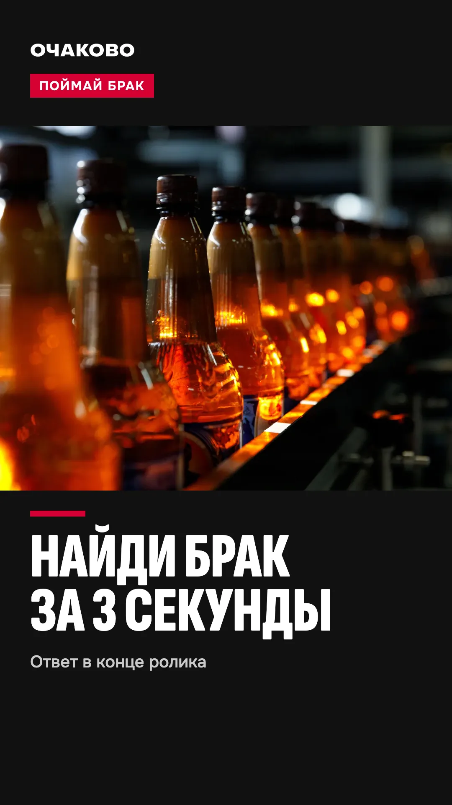
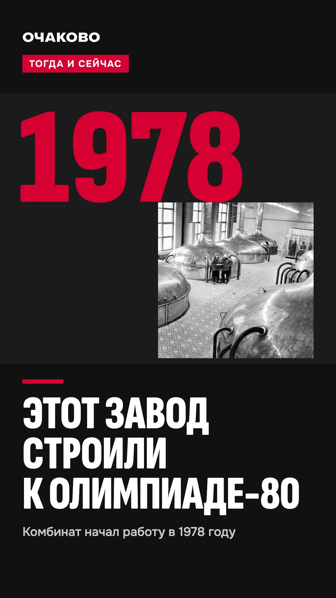
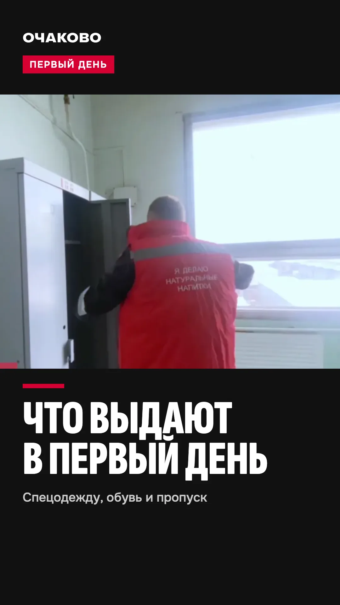
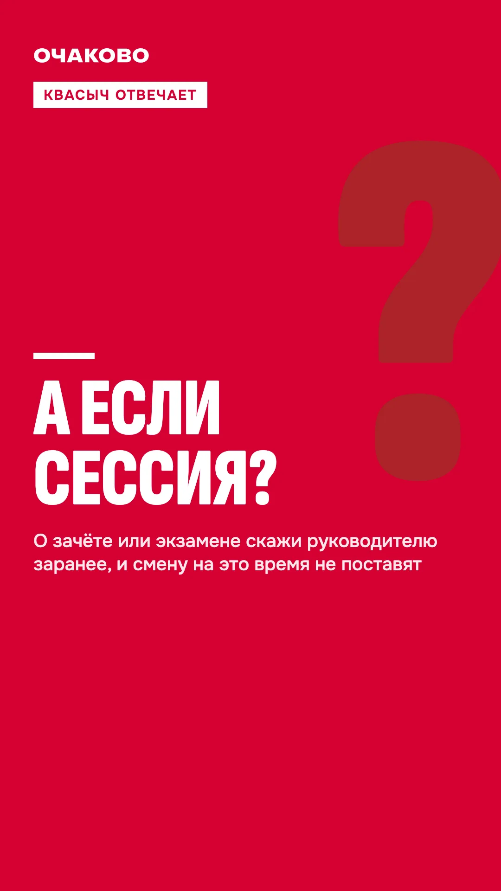
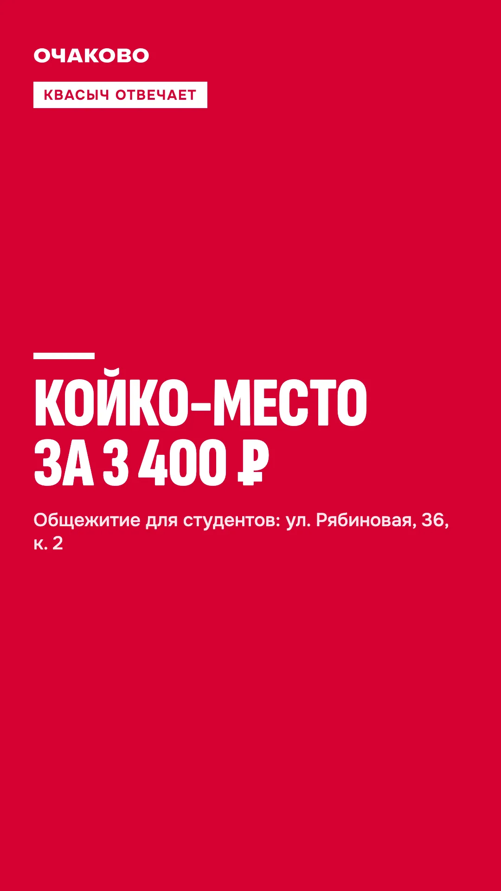
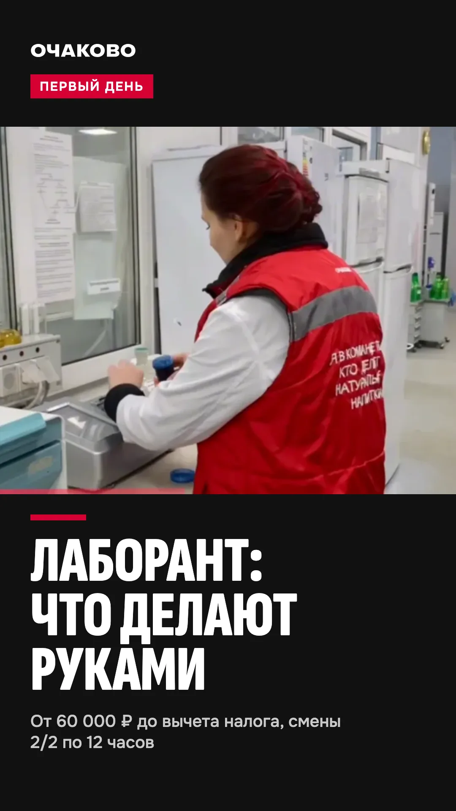
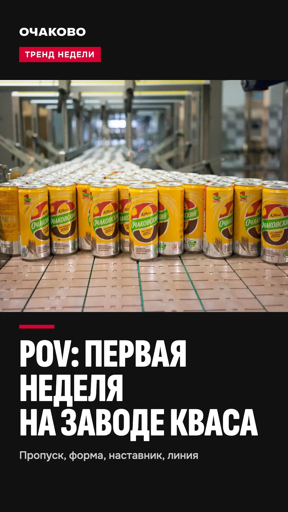